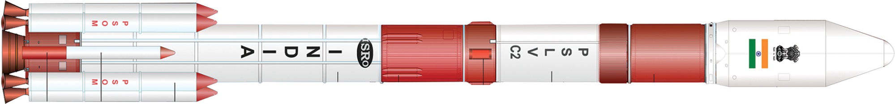
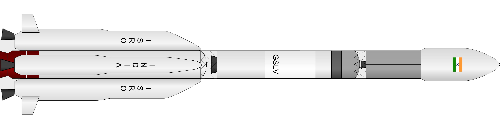
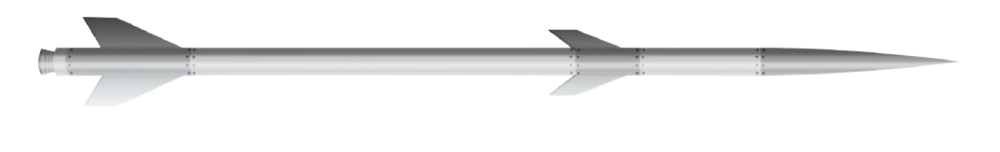

Satalite launches and rover launches
One of the most difficult job to explore the space is to launch the spacecraft, satellite and rover through the rocket. This goes more complicated as the mission goes further from the earth, there are complications like delay in signal transmission. As there are delay in signal communication there are chances that something happens to satellite, rover or the spacecraft and till any instruction is sent the mission is already a failure. This thing was seen in the Chandrayaan-2 when the rover crashed into the lunar surface due to communication break.

space launchers used by ISRO
Currently there are three type of launchers that are used by ISRO
- PSLV
- GSLV
- Sounding Rocket
PSLV
Polar Satellite Launch Vehicle (PSLV) is the third generation launch vehicle of India. It is the first Indian launch vehicle to be equipped with liquid stages. After its first successful launch in October 1994, PSLV emerged as the reliable and versatile workhorse launch vehicle of India with 39 consecutively successful missions by June 2017. During 1994-2017 period, the vehicle has launched 48 Indian satellites and 209 satellites for customers from abroad.
Besides, the vehicle successfully launched two spacecraft – Chandrayaan-1 in 2008 and Mars Orbiter Spacecraft in 2013 – that later traveled to Moon and Mars respectively
Vehicle specification
| Height | : 44m |
| Diameter | : 2.8m |
| NO of stage | : 4 |
| Lift off mass | : 320 tonnes (XL) |
| Variants | : 3 (PSLV-G, PSLV - CA, PSLV - XL) |
| First Flight | : September 20, 1993 |
| Launches till date | : 53 |
GSLV
Geosynchronous Satellite Launch Vehicle Mark II (GSLV Mk II) is the largest launch vehicle developed by India, which is currently in operation. This fourth generation launch vehicle is a three stage vehicle with four liquid strap-ons. The indigenously developed cryogenic Upper Stage (CUS), which is flight proven, forms the third stage of GSLV Mk II. From January 2014, the vehicle has achieved four consecutive successes
Vehicle specification
| Height | : 49.13m |
| NO of stage | : 3 |
| Lift off mass | : 414.75 tonnes (XL) |
| First Flight | : April 18, 2001 |
Sounding Rockets
Sounding rockets are one or two stage solid propellant rockets used for probing the upper atmospheric regions and for space research. They also serve as easily affordable platforms to test or prove prototypes of new components or subsystems intended for use in launch vehicles and satellites. With the establishment of the Thumba Equatorial Rocket Launching Station (TERLS) in 1963 at Thumba, a location close to the magnetic equator, there was a quantum jump in the scope for aeronomy and atmospheric sciences in India. The launch of the first sounding rocket from Thumba near Thiruvananthapuram, Kerala on 21 November 1963, marked the beginning of the Indian Space Programme . Sounding rockets made it possible to probe the atmosphere in situ using rocket-borne instrumentation. The first rockets were two-stage rockets imported from Russia (M-100) and France (Centaure). While the M-100 could carry a payload of 70 kg to an altitude of 85 km, the Centaure was capable of reaching 150 km with a payload of approximately 30 kg.
ISRO started launching indigenously made sounding rockets from 1965 and experience gained was of immense value in the mastering of solid propellant technology. In 1975, all sounding rocket activities were consolidated under the Rohini Sounding Rocket (RSR) Programme. RH-75, with a diameter of 75mm was the first truly Indian sounding rocket, which was followed by RH-100 and RH-125 rockets. The sounding rocket programme was the bedrock on which the edifice of launch vehicle technology in ISRO could be built. It is possible to conduct coordinated campaigns by simultaneously launching sounding rockets from different locations. It is also possible to launch several sounding rockets in a single day.
Operational sounding rockets
| Vehicle | Payload in Kg | Altitude | Purpose | Launch Pad |
|---|---|---|---|---|
| RH-200 | 10 | 80 | Meteorology | Thumba Balasore |
| RH-300MK-II | 60 | 160 | Aeronomy | SDSC-SHAR |
| RH-560-MK-II | 100 | 470 | Aeronomy | SDSC-SHAR |